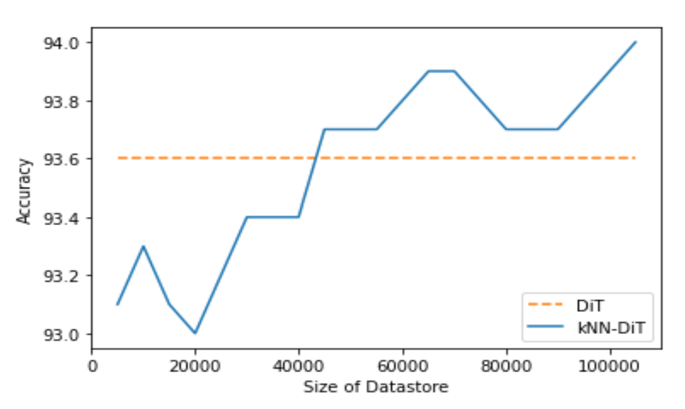

Hey Tech Enthusiasts!
I hope you're all having a great day! Today, I'm thrilled to share an exciting research breakthrough in the world of image classification. My name is Kristopher Paul, and I'm an Undergraduate researcher at IIT Gandhinagar, and I recently discovered a game-changing approach that significantly improves image classification tasks without the need for extra training data.
The Power of kNN-DiT
In the realm of language models, kNN-based approaches have shown remarkable success in tasks like Next Word Prediction. Inspired by this, I wondered if a similar concept could revolutionize image classification as well. And guess what? It absolutely does!
I present to you kNN-DiT, a groundbreaking method that combines the Document Image Transformer (DiT) with a nearest neighbour retrieval mechanism. The best part? It doesn't require any additional training data. Yes, you heard that right!
The Magic Behind kNN-DiT
So, how does kNN-DiT work? Let me break it down for you. We start by taking a stroll through the RVL-CDIP dataset and create a nifty key-value datastore using FAISS (Facebook AI Similarity Search). This datastore contains image feature-label pairs obtained during the process.
Now comes the exciting part - inference time! When we want to classify a query image, the kNN-DiT model queries the datastore using a vector representation of the query image generated by DiT. The retrieval process then finds the k-nearest neighbours of the query image. Among these neighbours, the label that appears most frequently is chosen as the final label for the query image. Voilà!
Breaking Away from the Norm
What sets kNN-DiT apart is how it explicitly memorizes image features. Unlike conventional models that tweak the classification layer's weights for memorization, kNN-DiT directly stores image feature-label pairs in the datastore. This unique approach not only improves the model's performance but also makes it more robust without any extra training data. It's like the model is learning to recognize patterns by itself!
Jaw-Dropping Results
I know you're eager to see some results, so here they are! I ran a series of experiments on the validation set containing 5000 images. The optimal k value for the kNN search turned out to be 15. Interestingly, unlike previous findings, the performance didn't consistently increase with larger k values. But hey, the results still blew my mind!
I trained kNN-DiT on just 105k images (which is only 26% of the training data) from a total of 400k images. And you know what? It outperformed DiT trained on the entire 400k images! Check out Figure 1 below to see the jaw-dropping comparison.
 Figure 1: Increasing the datastore size generally improves performanceClosing Thoughts
In conclusion, kNN-DiT is a game-changer for image classification tasks. Its ability to query training examples during inference makes it stand out from the crowd. I'm truly excited about the possibilities this opens up in the field of computer vision. I believe that learning similarity functions between images might be an easier task than traditional linear neural network-based image classification.
As we move forward, I plan to explore how kNN-DiT's performance scales with further increases in the datastore size. Stay tuned for more updates on this fascinating journey!
If you have any questions or thoughts about kNN-DiT or image classification in general, feel free to reach out. Let's geek out together!
References
This paper won me the first place at Datathon 2022, an ML hackathon part of IndoML 2022